מדריך טיולים · מרצה · סופר
למעלה מ-25 שנות ניסיון בהדרכת טיולים למזרח הרחוק ואירופה. מסעות ייחודיים, הרצאות מרתקות וחוויות שלא תשכחו.
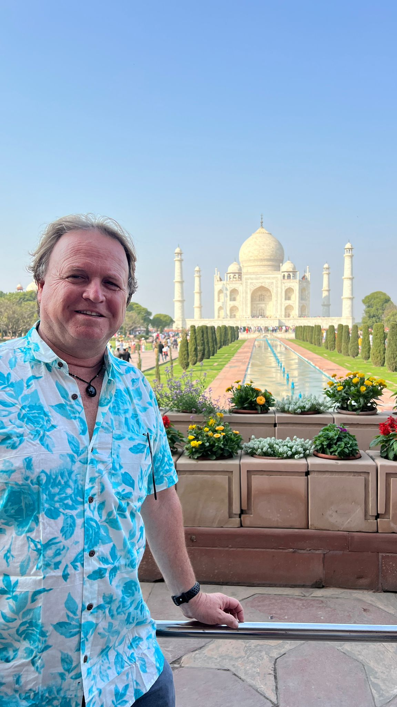
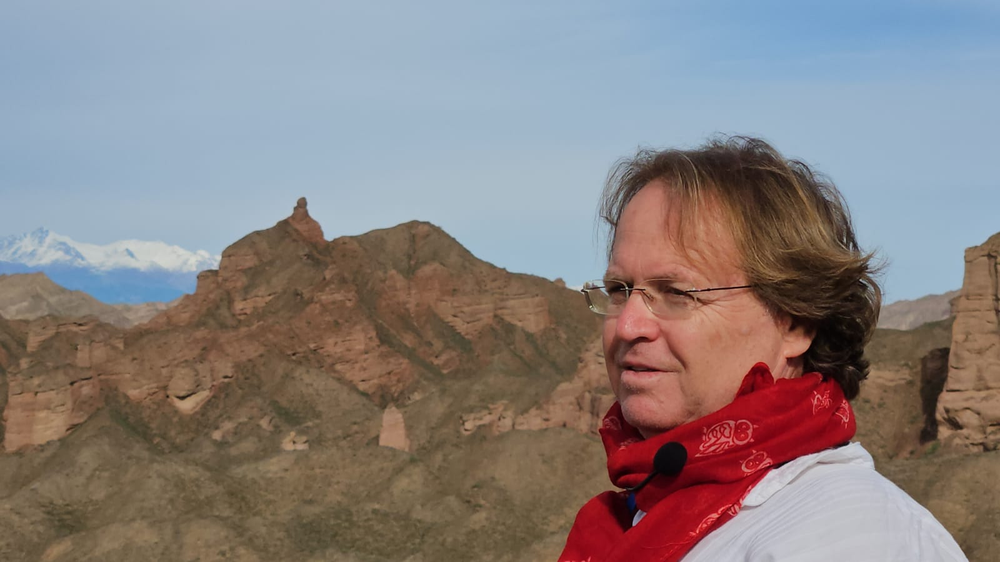
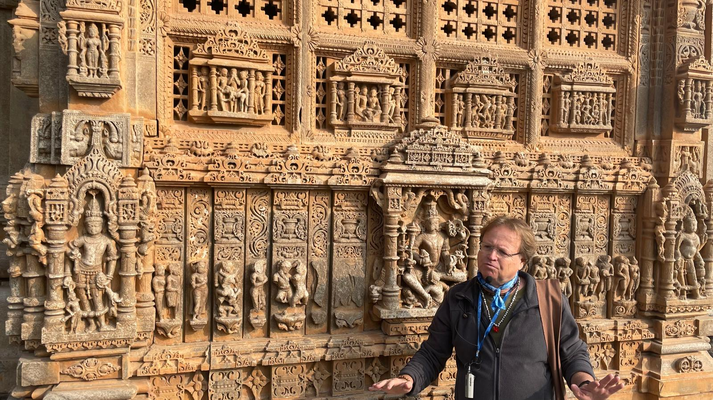
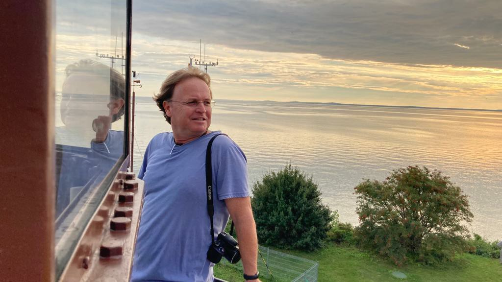
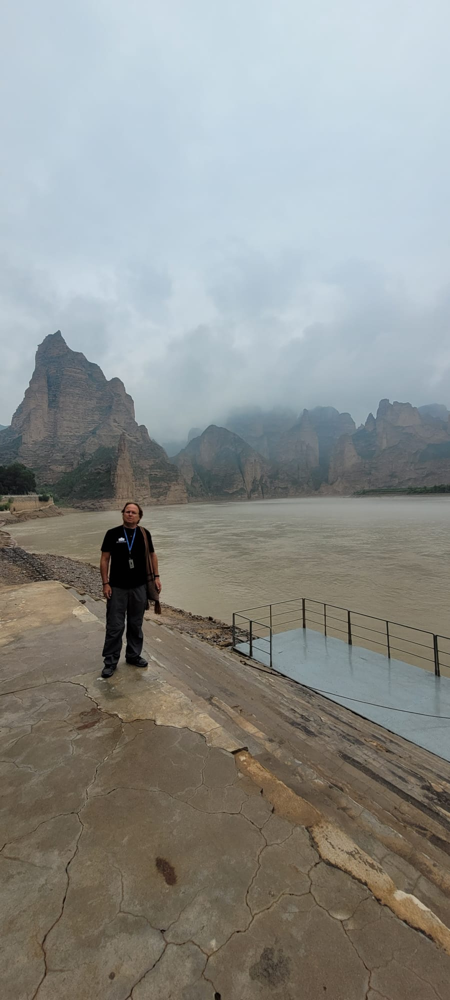
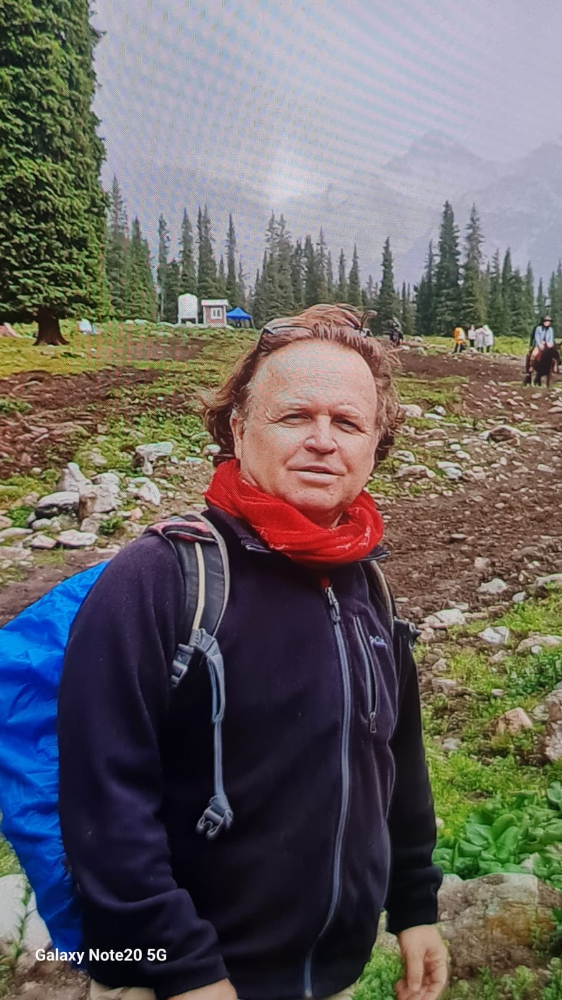
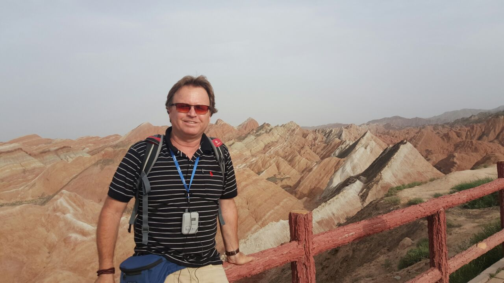
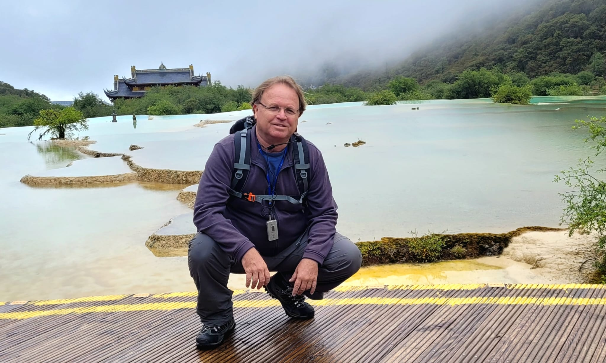
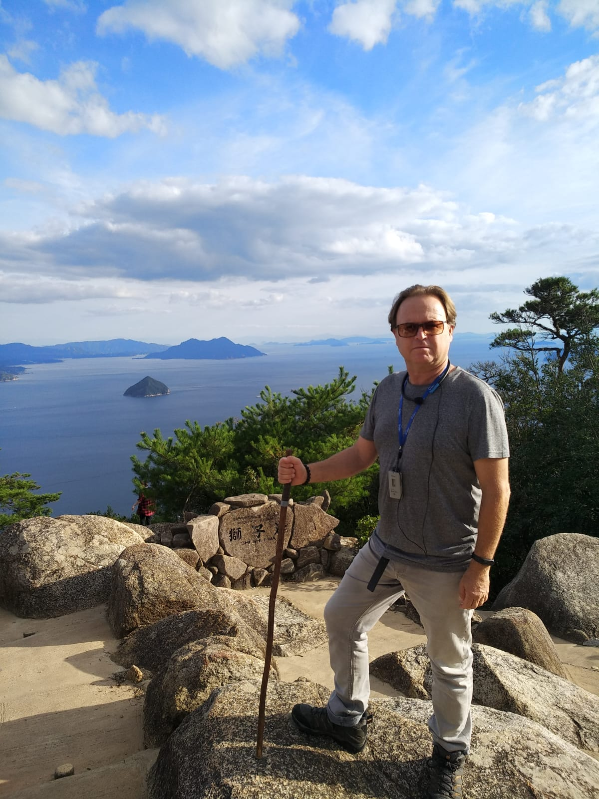
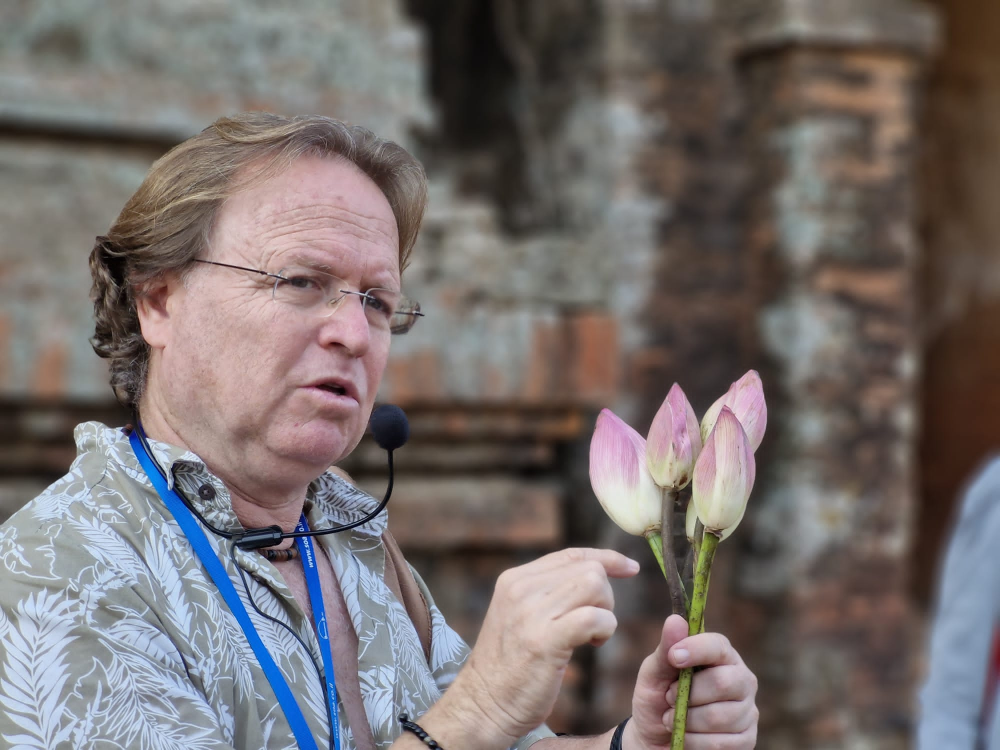
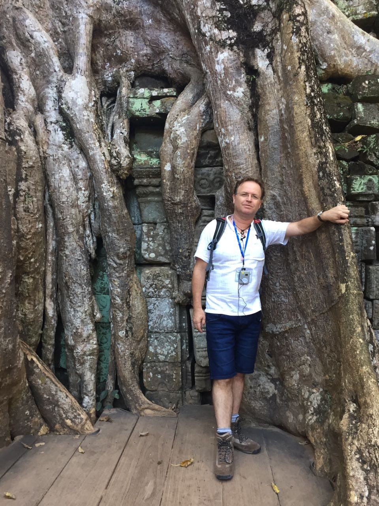
מתגורר בזיכרון יעקב, נשוי ואב לשלושה. בעל תואר שני בגיאוגרפיה וארכיאולוגיה מאוניברסיטת בן גוריון ואוניברסיטת תל אביב.
מזה למעלה מ-25 שנה מטייל ומדריך בעולם, כותב מאמרים ומצלם למגזינים גיאוגרפיים. ניהלתי בעבר את טיולי המשפחות של החברה הגיאוגרפית. מתמחה בהדרכת קבוצות והובלת מסעות וטיולים למזרח הרחוק וחלקים מאירופה.
«המוטו שלי בטיולים הוא לטייל לאט, להשתדל לנצל את הזמן היטב, לראות את המקומות והאנשים מבוקר עד ערב.»
ממש כמו ענן קייצי ולבן, בהרמוניה עם השמיים והאדמה, מרחף בחופשיות בשמיים הכחולים מאופק לאופק, עוקב אחרי נשימת האטמוספירה.
הצטרפו למסע הבא — טיולי דגש ייחודיים, תאריך אחד ליעד אחד
בעקבות הדרקון, הפיל הלבן והבודהא. ההרשמה כבר החלה. חברת "דרכים" מבטיחה לנרשמים לא לגבות אפילו דמי הרשמה מקרה שהטיול יבוטל בגלל המלחמה. סין המרתקת והנפלאה ממתינה לכם בחודש מאי הקרוב. הצטרפו אליי לטיול חלומי. נטייל יחד בין סין העתיקה והמסורתית שהשפיעה על כל העולם הישן ונכיר גם את סין החדשה, המתוחכמת, המסתגלת, המשתנה ללא הפסק. נצא בעקבות חכמים סינים, לוחמים וקיסרים שבחזונם ראו סין מאוחדת, גדולה. יחד נתלהב מהשירה הסינית שהותירו משוררים עם סגנון מיוחד, כתיבה עשירה ואומנותית. נטייל בין ערים, טבע דרמטי ויערות עתיקים, בהם נחבאים גם מקדשים נפלאים. נטעם ונהנה מעולם הקולינריה העשיר. נתקדם בדרכים, באוויר וברכבות המהירות בעולם. הצטרפו אליי למסע אל הרחוק, המסתורי והעמוק.
לפרטים נוספים ←תחנות דרכים עתיקות, שווקים בהם מזרח ומערב מתחברים, קבוצות מיעוטים וחיי נוודים.
לפרטים נוספים ←ליטא ולטביה — בין מבצרים עתיקים, יערות ואגמים. טיול הליכה ייחודי.
לפרטים נוספים ←מממלכת הדרקון הקטן אל ממלכה שנעלמה בג'ונגלים. מסע מרתק בדרום מזרח אסיה.
לפרטים נוספים ←מסע קסום בעונת הסאקורה. בין מקדשים עתיקים, גנים יפניים ושדרות עצי דובדבן פורחים מטוקיו ועד קיוטו.
לפרטים נוספים ←הרצאות מצולמות ומרתקות על מדינות, תרבויות ומסעות
בין המשי לשדות האורז. מסע מהדלתא של נהר המקונג בדרום ועד לשבטי הצפון.
לחץ לגלריית תמונותבעקבות השגריר הסיני זוהו דג'ואן בן המאה ה-13 אל העיר האבודה אנגקור.
לחץ לגלריית תמונותתחנות דרכים עתיקות, שווקים בהם מזרח ומערב מתחברים, חיי נוודים לצד יושבי הקבע.
לחץ לגלריית תמונותמסע אל צפונה הלא ידוע של בורמה, בעקבות אחרוני השבטים המבודדים.
מסע אישי אל ממלכת צ'אנדלה. מהי אומנות החיים הטובים ואומנות האהבה באבן.
לחץ לגלריית תמונותמסע במעלה נהר המקונג בין קמבודיה, לאוס ותאילנד. הכרות עם ערים רומנטיות על גדות הנהר.
מיאנמר הידועה כ״ארץ הזהב״ — יערות טיק, אבנים טובות, אגמים נוצצים ומורשת תרבותית עצומה.
לחץ לגלריית תמונותמשוט בין דלהי, ואראנסי, אגרה וראג'סטאן. מבצרים אדומים, סיפורי מהרג'ות וחיי הודו המרתקים.
לחץ לגלריית תמונותחיי תרבויות בעמק עשיר, דרכים נסתרות בהימלאיה ומימד הגובה. גג העולם.
לחץ לגלריית תמונותעיר הענק, המערבית בעולם יש אומרים. פיוז'ן בין מזרח למערב, מוקפת ערי מים חלומיות.
לחץ לגלריית תמונותמסע קסום בעונת הסאקורה. בין מקדשים עתיקים, גנים יפניים ושדרות עצי דובדבן פורחים מטוקיו ועד קיוטו.
לחץ לגלריית תמונות"שוויץ של אסיה" — נופים אלפינים מרהיבים, עדרי סוסים בין יורטות לבנות על שפת אגמים כחולים.
לחץ לגלריית תמונותבין מבצרים ובתי אחוזה עתיקים, לאורך נהרות בלב יערות ועל גדות מאות אגמים.
לחץ לגלריית תמונותמדינה קטנה מלאה בעמקים מוריקים, כפרים עתיקים, אגמים ציוריים וברטיסלאבה עמוסת ההיסטוריה.
לחץ לגלריית תמונותספרי מסע ותרגום מרתקים
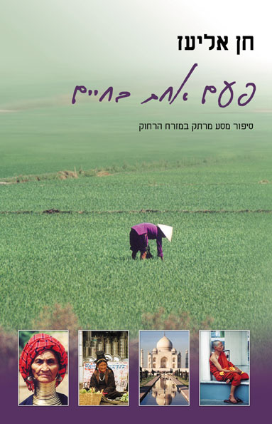
557 עמודים כולל 32 עמודי צבע. ספר מסע מבוסס על יומן שנכתב במהלך שנת טיול במזרח הרחוק. למחרת מסיבת חתונתם לקחו גלית וחן את תרמיליהם ויצאו להגשים חלום חיים: מסע ארוך, בלתי מוגבל בזמן, במזרח הרחוק.
נפאל, הודו, תאילנד, בורמה, קמבודיה וויאטנם — רכבות, אוטובוסים, אופנוע, ריקשות וסירות.
הספר היחיד בעברית אודות ההיסטוריה של ממלכת קמבודיה האדירה. תרגום כתביו של השגריר הסיני צ'ו טא-קואן מהמאה ה-13, שביקר בקמבודיה ותיעד את חיי הממלכה. 109 עמודים.
90 ₪ כולל משלוח והקדשה אישית
רגעים מיוחדים מהמסעות והמפגשים שלי
פסטיבל האי ט'ו הא (Tho Ha)
מפורסם בגלל ייצור ניירות האורז, מהיסודות החשובים ביותר במטבח הווייטנאמי. שטנו במעבורת אל אי, וביקרנו בשוק המיוחד שנפתח לכבוד הפסטיבל. החיים האמיתיים בהאנוי, השתקפו בדוכנים בהם נמכרה התוצרת המקומית ובנהירה של מאות מבני המקום אל המקדשים העתיקים כדי לכבד את האלים. חזינו בהם לבושים במיטב בגדיהם המסורתיים, חוגגים, מתפללים ומאושרים.
אביב חסר התחשבות
העץ עירום,
ללא צבע, ללא ריח,
וכבר על הענף
אביב חסר התחשבות מופיע.
יצאנו לכבד את הפריחה הנפלאה, האביבית, המפורסמת
ברחבי יפן. היינו כחולמים.
לשוב אלייך
חן אליעז / 2003
כבר ראיתי ערים יפות
מוקפות חומה, מוצלות, מיסתוריות.
כבר שמעתי פעמונים מצלצלים מראשי כנסיות אבן באירופה
וגלגלי תפילה מתגלגלים במקדשי קטמנדו.
כבר הרחתי ריחות בוקר, שוק ותבשילים
מסתלסלים בסמטאות אבנים עתיקות.
כבר ליטפתי אבנים וטעמתי שיקויים.
אבל..........אחרי כולן תמיד שבתי אלייך
תמיד חזרתי לסמטאותייך, בתי העץ ודלתות התבליטים,
שבתי לענפי הערבה הבוכה המשתפלים לתעלות המים,
הרחובות המתפתלים, כיפות ההרים הלבנים.
לפעמים אני חושש לאבד אותך ליג'יאנג, לא לשוב אלייך,
אם אכתוב יותר מידי, אם אפרט..........
אבזבז אותך.
תני לי יד רכה ונטייל כל היום בעיר
ובלילה נשיר שירים
ב"גשר האבן הגדולה".
סיציליה
דורית ויסמן
סִיצִילְיָה – חֻרְבוֹת מִשְּׁנוֹת הַ־50.
מִתְעַרְבְּבוֹת בָּחֳרָבוֹת.
לִפְנֵי אֶלֶף שָׁנָה.
מֶלְצָרִים הֲדוּרִים חַסְרֵי שִׁנַּיִם.
מְנִיפוֹת בִּמְקוֹם מְאַוְרֵרִים.
לִפְנוֹת עֶרֶב סְנוּנִיּוֹת.
מִתְאַבְּדוֹת אֶל הַתְּהוֹם.
ייעוץ אישי ומקצועי לתכנון טיול מושלם
בניית מסלול מותאם אישית לפי הזמן, התקציב והעדפות שלכם — ממדינה אחת ועד סיור רב-יעדי.
מלונות בוטיק, אכסניות, גסטהאוסים ולינות ייחודיות שרק מי שמכיר את האזור לעומק יכול להמליץ עליהם.
היכן לאכול, מה לטעום, איך להתנהג — טיפים מקצועיים שיהפכו את הטיול לחוויה אותנטית ובלתי נשכחת.
מה לארוז, אילו חיסונים נדרשים, ביטוח נסיעות, ויזות, מטבע מקומי — כל מה שצריך לדעת לפני שעולים על המטוס.
תכנון טיולים לאסיה עם ילדים — התאמת הקצב, הפעילויות והאטרקציות למשפחה שלכם.
יש שאלה בשטח? בעיה לא צפויה? חן זמין בוואטסאפ לסייע גם כשאתם כבר בדרך.
פגישת ייעוץ ראשונה — צרו קשר ונקבע זמן
לייעוץ ראשונילפרטים על טיולים, הרצאות, רכישת ספרים או כל שאלה אחרת
אשמח לשמוע מכם. בין אם אתם מעוניינים להצטרף לטיול, להזמין הרצאה, לרכוש ספר או סתם לשאול שאלה — אל תהססו ליצור קשר.